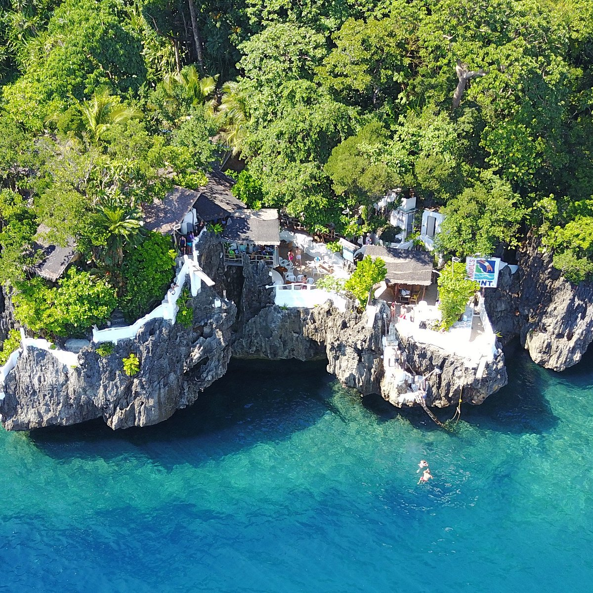
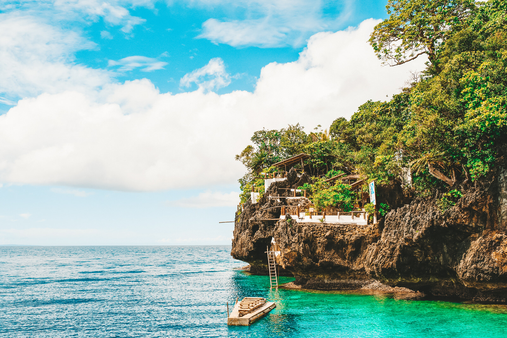
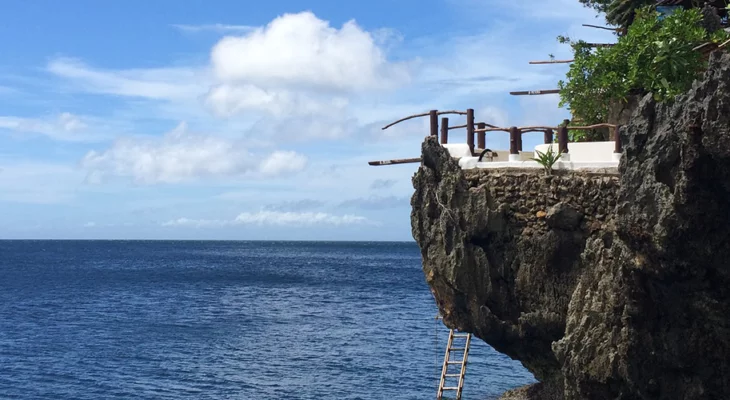

HOME
*Philippines Best Spots*
Welcome to the Pearl of the Orient Seas
This Boracay gem is the perfect change of scenery from the Boracay you’re used to.
Ariel’s point is most popular for their 15 meter high “diving boards” where adventure junkies can leap off to the clear waters below.
But if you’re not up for the thrill, Ariel’s point is still worth the visit. Despite its increasing popularity, this area has one of the clearest waters and richest marine life in Boracay.
What’s best is the fee typically includes a buffet lunch, unlimited jumps, snorkeling, kayaking, and roundtrip transfers.



Back